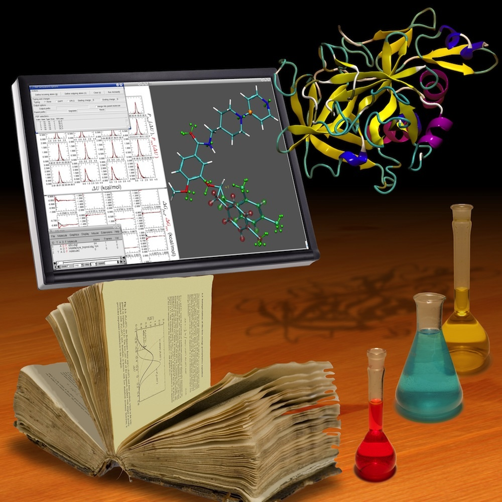

CECAM workshop
Free energy calculations:
From theory to applications
June 4th - 8th 2012, Ecole des Ponts ParisTech
To understand fully the vast majority of chemical processes, it is
often necessary to examine their underlying free-energy behavior. This
is the case, for instance, in protein-ligand binding and drug
partitioning across the cell membrane. These processes, which are of
paramount importance in the field of computer-aided, rational drug
design, cannot be predicted reliably without the knowledge of the
associated free-energy changes. The reliable determination of
free-energy changes using numerical simulations based on the
fundamental principles of statistical mechanics is now within reach.
Developments on the methodological fronts in conjunction with the
continuous increase in computational power have contributed to bringing
free-energy calculations to the level of robust and well-characterized
modeling tools, while widening their field of applications. In
particular, the development of robust numerical methods for free energy
computations is strongly connected to fundamental questions in various
scientific fields: rare event simulations, coarse-graining and reduced
models, or the thermodynamic of out-of-equilibrium systems, for
example. The workshop builds on previous events in Lyon in 2000
and 2004 and in Banff
in 2008. With four years separating the last event, this
workshop, interdisciplinary by design, will survey progress achieved
recently, focusing not only on methodological and algorithmic issues,
but also on relevant applications that contribute to push the field
forward.
Link to the CECAM webpage of the conference: http://www.cecam.org/workshop-0-695.html
Registration is free but mandatory ! Please send an e-mail to the organizers.
Deadline for registration: 21st April.
Program and list of participants:
The program is here.
List of abstracts.
Slides of some talks: M. Athènes, R. Elber, E. Gallichio, J. Gumbart, J. Hénin, D. Kofke, F. Legoll, Y.L. Luo, L. Maragliano part 1 and part 2, L. Pratt, E. Rosta, M. Rousset, M. Shirts, T. Simonson, R. Skeel, G. Stoltz
There will be a poster session on Wednesday afternoon. Please send an e-mail to lelievre@cermics.enpc.fr to propose a poster.
List of posters.
List of participants.
Location:
The workshop will take place at the Ecole des Ponts ParisTech, Marne-la-Vallée (close to Paris). This is how to get there (second page in English) see also here (in French).
For attendees, here are a few suggestions for accommodation.
Organizing team:
Sponsoring: This meeting is supported by:
{kind=link}